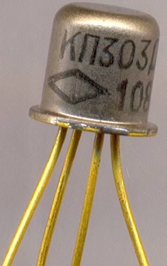
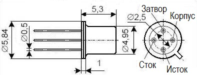

Транзистор КП303
КП303(А-Ж, И) - кремниевые планарно-эпитаксиальные транзисторы с управляющим p-n переходом и каналом n-типа предназначены для использования в радиовещательной, приемно-усилительной, телевизионной и другой аппаратуре.

Рис. 1 - Внешний вид транзисторов КП303А,Б,Д,Е

Рис. 2 - Размеры и цоколевка транзисторов КП303
Характеристики полевых транзисторов КП303
Таблица 1
| Тип | Pmax | fmax | Uси max | Uзс max | Uзи max | Iс max |
|---|---|---|---|---|---|---|
| мВт | МГц | В | В | В | мА | |
| КП303А | 200 | - | 25 | 30 | 30 | 20 |
| КП303Б | 200 | - | 25 | 30 | 30 | 20 |
| КП303В | 200 | - | 25 | 30 | 30 | 20 |
| КП303Г | 200 | - | 25 | 30 | 30 | 20 |
| КП303Д | 200 | - | 25 | 30 | 30 | 20 |
| КП303Е | 200 | - | 25 | 30 | 30 | 20 |
| КП303Ж | 200 | - | 25 | 30 | 30 | 20 |
| КП303И | 200 | - | 25 | 30 | 30 | 20 |
Таблица 2
| Тип | Uзи отс | g22и | Iз ут | S | Iс нач | C11и | C12и | Кш | Токр |
|---|---|---|---|---|---|---|---|---|---|
| В | мкСм | нА | мА/В | мА | пФ | пФ | дБ | °С | |
| КП303А | 0,5…3 | - | <1 | 1…4 | 0,5…2 | <6 | <2 | - | -40…+85 |
| КП303Б | 0,5…3 | - | <1 | 1…4 | 0,5…2 | <6 | <2 | - | -40…+85 |
| КП303В | 1…4 | - | <1 | 2…5 | 1,5…5 | <6 | <2 | - | -40…+85 |
| КП303Г | <8 | - | <0,1 | 3…7 | 3…12 | <6 | <2 | - | -40…+85 |
| КП303Д | <8 | - | <1 | >2,6 | 3…9 | <6 | <2 | <4 | -40…+85 |
| КП303Е | <8 | - | <1 | >4 | 5…20 | <6 | <2 | <4 | -40…+85 |
| КП303Ж | 0,3…3 | - | <5 | 1…4 | 0,3…3 | <6 | <2 | - | -40…+85 |
| КП303И | 0,5…2 | - | <5 | 2…6 | 1,5…5 | <6 | <2 | - | -40…+85 |
Условные обозначения электрических параметров полевых транзисторов:
- Pmax - максимально допустимая постоянная рассеиваемая мощность полевого транзистора.
- fmax - максимально допустимая рабочая частота полевого транзистора.
- Uси max - максимально допустимое напряжение сток-исток.
- Uзс max - максимально допустимое напряжение затвор-сток.
- Uзи max - максимально допустимое напряжение затвор-исток.
- Iс max - максимально допустимый ток стока полевого транзистора.
- Uзи отс - напряжение отсечки полевого транзистора. Напряжение между затвором и истоком транзистора с p-n переходом или с изолированным затвором, работающего в режиме обеднения, при котором ток стока достигает заданного низкого значения.
- g22и - активная составляющая выходной проводимости полевого транзистора в схеме с общим истоком.
- Iз ут - ток утечки затвора. Ток затвора при заданном напряжении между затвором и остальными выводами, замкнутыми между собой.
- S - крутизна характеристики полевого транзистора. Отношение изменения тока стока к изменению напряжения на затворе при коротком замыкании по переменному току на выходе транзистора в схеме с общим истоком.
- Iс нач - начальный ток стока. Ток стока при напряжении между затвором и истоком, равном нулю, и при напряжении на стоке, равном или превышающем напряжение насыщения.
- C11и - входная ёмкость полевого транзистора. Емкость между затвором и истоком при коротком замыкании по переменному току на выходе с общим истоком.
- C12и - проходная ёмкость полевого транзистора. Емкость между затвором и стоком при коротком замыкании по переменному току на входе в схеме с общим истоком.
- Кш - коэффициент шума транзистора.
- Токр - температура окружающей среды.
Источники
tec.org.ru - КП303А / КП303Б / КП303Д / КП303Е / КП303Ж / КП303И (Ni)